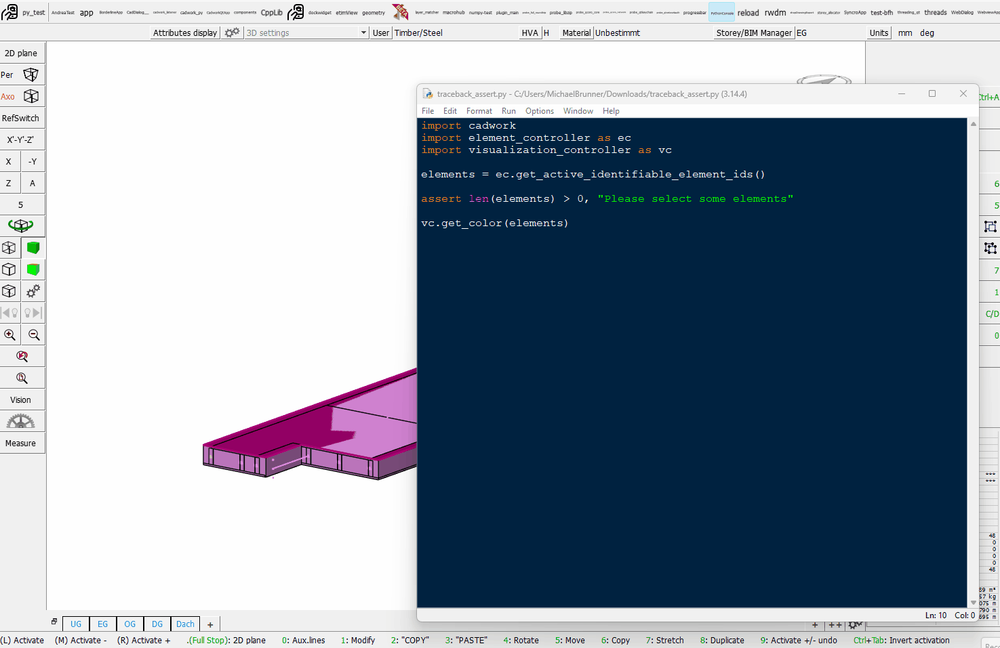

Debugging & Common Pitfalls¶
Every script eventually breaks. This page is your rescue reference when something goes wrong — read a traceback, recognize the error, apply the fix, verify visually.
Read the traceback bottom-up¶
When Python prints an error, the last line tells you what broke. The lines above it tell you where it broke.
Traceback (most recent call last):
File "frame.py", line 12, in <module>
p1 = gc.get_p1(eid)
File "...", line 47, in get_p1
raise RuntimeError("Element not found: 1042")
RuntimeError: Element not found: 1042
Read it like this:
- Last line →
RuntimeError: Element not found: 1042— what happened. - Second-to-last block → the API call that raised the error.
- First block in your file → the line in your code that triggered it (
line 12).
Fix priority: find the line in your file that's named in the traceback. The fix is almost always there.

Common errors and what they mean¶
AttributeError: module 'element_controller' has no attribute 'get_all_identifiable_elements'¶
You mistyped a function name. Compare letter-by-letter against the docs or the cheat sheet. Common slips:
get_all_identifiable_element_ids(correct) vs.get_all_identifiable_elements(missing_ids)get_element_material_name(correct) vs.get_material_name
dir(element_controller) in a Python prompt lists everything available.
TypeError: set_color() takes 2 positional arguments but 3 were given¶
You passed arguments in the wrong order or wrong count. set_color(ids, color) takes two: a list of IDs and a color id. Forgetting that ids must be a list ([eid] not eid) is the #1 cause of this error in cadwork scripts.
IndexError: list index out of range¶
You assumed a list had elements when it didn't.
joists = [e for e in all_ids if ac.get_name(e) == "Joist"]
first = joists[0] # IndexError if the model has no joists
Fix: check first.
KeyError: 'material'¶
You accessed a dict key that doesn't exist. Use .get() with a default:
Script runs but does nothing¶
No traceback, no output, no model change. Walk through:
- Did you
print()anything? If yes, where did the output go? (cadwork shows it in the console.) - Did you call a
set_*function on an empty list?set_name([], "Joist")is a no-op. - Are you using the right module — did you mean
ec(element) but typeac(attribute)? - Is anything selected?
get_active_identifiable_element_ids()returns[]if no element is selected.
Sanity-check checklist before asking for help¶
Walk through these before raising your hand:
- [ ] Is
timber-framed-elements.3dopen in cadwork 3d? - [ ] Is the right element selected (if your script uses
get_active_…)? - [ ] Is the script in the right
userprofil_xxxx\3d\API.x64\my_script\folder, with matching filename? - [ ] Did you
importevery module you use (ec,ac,gc,vc,uc)? - [ ] Did you read the last line of the traceback?
- [ ] Did you compare the function name against the cheat sheet?
Workshop survival tips¶
Save before you run
Every modification script can corrupt the model. Save the file before running anything that creates or deletes elements. Ctrl+Z works for most cadwork operations but is not always reliable for batch API changes.
Print early, print often
print(f"After filter: {len(joists)} joists") after every major step. When something is wrong, the last successful print tells you exactly how far you got.
ID lifetime
Element IDs are valid only within the current cadwork session. Never write code that assumes ID 1042 is the same element tomorrow. Always look up elements by GUID, not by hard-coded ID.
Units
cadwork's Python API uses millimeters for all lengths and degrees for some angles (depending on the function). When in doubt, print a value and check the magnitude — a beam that prints 5.0 is probably 5 mm, not 5 m.